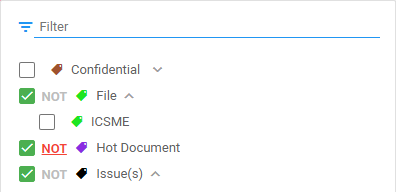

The Query Builder assists you when creating complex queries.
Combine search terms with operators like AND, OR or NOT.
Other suggestions are W/5 (Within), P/5 (Precedes), ~2 (Fuzzy), () (Parentheses),
[0-9a-z]{3} (pattern), 2 OF {query1, query2, query3} (Quorum).
Tip: Select Parentheses and immediately start typing (the cursor is automatically placed inside the brackets).
Combine full-text and Fields/Tags/Review Status queries with AND or OR. Select the button to switch from AND to OR and back.
The AND/OR button is gray when not active (that is, not combined with another query).
Select to add a sub query (nested query), with a maximum of 7 levels for sub queries within sub queries. A sub query can be added to the highest/first level, or nested within sub queries.
Note: You can add more than 7 sub queries to the highest level.
Current limitation: You cannot add Tags/Review Status queries to sub queries.
Select to search Fields, Tags and/or Review Status.
Tip: Use the Home or End button to quickly scroll when filtering the fields.
Please note that, for performance reasons, only the first 10 values will be shown in an extracted entity field. So, for extracted email addresses, only the first 10 extracted email addresses will be shown. If you want to view all extracted email addresses, you need to download or export the result list.
Search quickly on years/months within Fields.
To search for documents with a certain tag, select the tag:
To search for documents without a certain tag, select the tag: , then select NOT:
To search the Review Status, select Reviewed or Not Reviewed:
: Click to reuse your queries (for example, for defining the initial Training Set in Assisted Review).
Note: All executed queries are stored in the History tab of Saved Searches. These queries can be reused, but not renamed/shared or deleted.
You can only share/rename or delete a saved search:
Rename in the General tab:
Share in the Shared With tab.
Note: You can only share with users/groups that have a role with the 'Access Matter' permission. For more information, see Role Permissions Explained.
View your search results as:
Facets (Browse)
Document List
Discover our Search Language Techniques, such as fuzzy searches, wildcard searches, macros and more.
Explore all our Search Methods, including Batch Search.
Searched keyword(s) are highlighted in Document View, so the reviewer can focus on that part(s) of the document. The different search highlighting colors are yellow for Keyword Search, custom selected color for Keyword Highlighting, and pink for Search within a Document (Ctrl + F)).
Use the arrows or Shortcut Keys to move forward and backward along the hits.
For more information on keyword search, see the following video:
Instructions
1. Click Browse.
2. Insert a search query (or skip this step and continue with defining Fields (to search the metadata), Tags and/or Review Status). Audio & Video files will also be searched (and opened in the Media View tab). For more information about defining queries, please refer to the Search Language Guide (see https://help.zylab.com > Resources).
3. In Build Query Mode, combine full-text and Fields/Tags/Review Status queries with AND or OR. Select the button to switch from AND to OR and back. The AND/OR button is gray when not active (that is, not combined with another query).
• Select to add a sub query (nested query), with a maximum of 7 levels for sub queries within sub queries. A sub query can be added to the highest/first level, or nested within sub queries. Note: You can add more than 7 sub queries to the highest level. Current limitation: You cannot add Tags/Review Status queries to sub queries.
4. Text Query Mode is for simple searches, Build Query Mode is for complex searches.
5. Once you have defined your search query, you can save (and share) it by clicking Save Query: The search query will be stored in the SAVED tab (select ). You can view executed (unsaved) search queries in the HISTORY tab (via Saved Searches). If you want, you can still save (and share) them. Filter a long list of queries via the Filter box (select the box and type what you are looking for).
• Via the SAVED tab, share your search query by hovering above it with your mouse and clicking the Rename/Share button. Give the search query a name and select users/groups to share the search query with. Click Save to share.
Only the owner can rename or delete the search query.
• Via the SAVED tab, delete your search query by hovering above it with your mouse and clicking the Remove button.
• Via the HISTORY tab, save your search query by hovering above it with your mouse and clicking the Save button. A user may also use keywords directly in the Search field (see step 2). For example, insert from=john or from=null (in the first example you search for the value 'john' in the field 'from', in the second example you search for empty field values in the field 'from'). Be sure to use the field names displayed in the second list, where no spaces are used (accessed, appointmentend, appointmentstart, assignedto, etc.). Important Notice: The syntax used for date fields is different when used in the Search in all text documents field. Instead of dd-mm-yyyy use mm/dd/yyyy. For example, Appointment Start = 22-4-1999 will be - when typed in the Search in all text documents field - appointmentstart=04/22/1999
• Select a field from the list. Filter the list via the Filter box.
• Set a value and a logical operator (equal, not equal to, greater than, less than, etc.).
• When you are finished, click SEARCH.
• Search quickly on years/months within Fields.
6. Click Tags to search for documents with or without tags.
To search for documents with a certain tag, select the tag.
To search for documents without a certain tag, select the tag, then select NOT.
7. Click Review Status to search for documents that are or are not reviewed.
8. When you are finished with defining your search query, click Search. Your hits will be highlighted in the found documents (Document View). The number of hits (Search Hits) can be seen at the top of the document. Use the arrows to move forward and backward along the hits.
When active, the Query Builder button is blue.
The Query Builder assists you when creating complex queries.
Tip: Select Parentheses and immediately start typing (the cursor is automatically placed inside the brackets).
Combine full-text and Fields/Tags/Review Status queries with AND or OR. Select the button to switch from AND to OR and back.
The AND/OR button is gray when not active (that is, not combined with another query).
Select to add a sub query (nested query), with a maximum of 7 levels for sub queries within sub queries. A sub query can be added to the highest/first level, or nested within sub queries.
Note: You can add more than 7 sub queries to the highest level.
Current limitation: You cannot add Tags/Review Status queries to sub queries.
Select to search Fields, Tags and/or Review Status.
Tip: Use the Home or End button to quickly scroll when filtering the fields.
Please note that, for performance reasons, only the first 10 values will be shown in an extracted entity field. So, for extracted email addresses, only the first 10 extracted email addresses will be shown. If you want to view all extracted email addresses, you need to download or export the result list.
Search quickly on years/months within Fields.
To search for documents with a certain tag, select the tag:

To search for documents without a certain tag, select the tag: , then select NOT:
To search the Review Status, select Reviewed or Not Reviewed:
: Click
to reuse your queries (for example, for defining the initial Training Set in Assisted Review).
Note: All executed queries are stored in the History tab of Saved Searches. These queries can be reused, but not renamed/shared or deleted.
You can only share/rename or delete a saved search:
Rename in the General tab:
Share in the Shared With tab.
Note: You can only share with users/groups that have a role with the 'Access Matter' permission. For more information, see Role Permissions Explained.
Searched keyword(s) are highlighted in Document View, so the reviewer can focus on that part(s) of the document. The different search highlighting colors are yellow for Keyword Search, custom selected color for Keyword Highlighting, and pink for Search within a Document (Ctrl + F)).
Use the arrows or Shortcut Keys to move forward and backward along the hits.
For more information on keyword search, see the following video:

 to search Fields, Tags and/or Review Status.
to search Fields, Tags and/or Review Status. 

 , then select NOT:
, then select NOT: 
 : Click
to reuse your queries (for example, for defining the initial Training Set in Assisted Review).
: Click
to reuse your queries (for example, for defining the initial Training Set in Assisted Review).